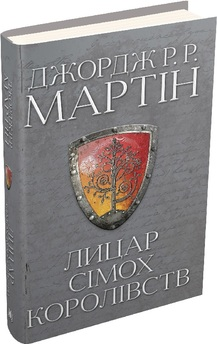
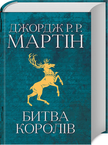
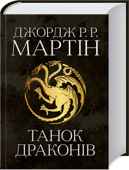

Найкращі книжки письменика Джорджа Мартіна!
Впевнено крокуючи шляхом особистого зростання та досягнень, книги у жанрі "допоможи собі сам" стають важливим компаньйоном на цьому непередбачуваному, але захопливому подорожі. Їхнє значення у сучасному світі стає все більш невід'ємним, адже вони не просто надають поради, але й відкривають двері у світ внутрішнього самовдосконалення та розуміння. Від глибоких внутрішніх трансформацій до практичних порад щодо побудови успішних відносин і досягнення поставлених цілей - кожна сторінка цього жанру відкриває нові можливості для того, щоб кожен із нас став кращою версією себе. Пропонуємо вам відчути силу цього жанру разом із нашим вибором найкращих книг у жанрі "допоможи собі сам". Дозвольте собі відкрити сторінки, що наповнені мудрістю, натхненням та практичними рекомендаціями, які допоможуть вам зробити кожен день більш успішним та задоволеним. Нехай ця подорож в світ книжок "допоможе собі сам" стане першим кроком до нових досягнень, які змінять ваше життя до найкращого.
| Назва книги | К-сть сторінок | Ціна книги |
|---|---|---|
| Вогонь і Кров | 672 сторінки | 725 ₴ |
| Лицар Сімох Королівств | 320 сторінок | 525 ₴ |
| Гра Престолів | 800 сторінок | 925 ₴ |
| Битва Королів | 864 сторінок | 1000 ₴ |
| Танок Драконів | 1120 сторінок | 1125 ₴ |
"Вогонь і Кров
Анотація
- Ювілейне видання з новими розділами
- Бестселер New York Times
- Продано понад 40 мільйонів копій
- Найвпливовіша бізнес-книга ХХ сторіччя №1
Аби досягти поставленої мети, недостатньо бути професіоналом. Проте успіх, особистісне зростання та прийняття правильних рішень гарантовані, якщо ви оволодієте всього 7 навичками. Саме їх описав і структурував у своєму бестселері Стівен Кові. Перетворивши ці навички на звички, кожен може суттєво підвищити рівень життя й повністю реалізувати власний потенціал.
Детальні покрові інструкції допоможуть вам:
- бути проактивним та брати відповідальність за власні дії й рішення;
- визначати основну мету і пріоритетність поставлених завдань;
- конструктивно вести перемовини з потенційними партнерами;
- знаходити рішення, які будуть виграшними для кожної зі сторін;
- вивільнити час для подальшого саморозвитку, зберігаючи баланс "робота/дім"
За 30 років успішних перевидань однієї з кращих бізнес-книжок світу Стівен Кові надихнув на рішучі зміни у житті мільйони людей.
Огляд даної книги на Youtube"Лицар Сімох Королівств

Анотація
Залежність між інтелектом і життєвим успіхом зрозуміла і майже аксіоматична. Але ж на життєві здобутки впливає й емоційна сфера людини.
- Які емоційні складники передусім формують нашу долю?
- Для чого нам емоції та як навчитися ними керувати?
- Чи можна виправити емоційні моделі, закладені в людині, коли вони гальмують її рух до кращого?
- І взагалі, чи реально об’єднати два слова «емоційний інтелект» і не отримати суперечність?
Відповіді на ці питання дає оперта на наукову базу і водночас легко написана для широкої аудиторії книжка Деніела Ґоулмана — один із безперечних психологічних бестселерів останніх десятиліть.
Огляд даної книги на Youtube"Гра Престолів

Анотація
Незначні зміни, значні результати! Дізнайтеся секрет тривалих результатів! Нашпигована заснованими на фактах стратегіями із самовдосконалення, книга "Атомні звички" навчить, як набути манер і навиків, що працюватимуть на вас, а не проти вас. У книзі Джеймс Клір ділиться надзвичайно цікавою і по-справжньому продуктивною методикою напрацювання корисних звичок. В її основі лежить поняття чотириступеневої моделі звичок (подразник, прагнення, відгук, винагорода), а також чотири породжені цією моделлю закони зміни поведінки. Викладений матеріал підтверджується результатами наукових досліджень, проте книгу слід трактувати не як наукову розвідку, а як посібник з експлуатації, що містить мудрі практичні поради та пояснення механізмів створення і змінювання власних звичок. Єдиного правильного способу набуття корисних звичок, звісно, не існує, але автор пропонує найкращий із відомих підхід, який спрацює незалежно від того, з чого саме ви починаєте і що саме намагаєтеся змінити.
Огляд даної книги на Youtube"Битва Королів

Анотація
Вже майже 80 років поради автора цієї книжки допомагають людям здобувати друзів, завойовувати довіру, будувати міцні стосунки. Надзвичайно складні речі пояснюються простими і доступними словами. Ці невигадливі рекомендації допоможуть вам:
- вийти з суперечки, зберігши гідність і дружні стосунки з опонентом;
- сказати "ні", не відштовхнувши людину;
- справити хороше враження на клієнта за 10 секунд і утримати його на багато років;
- навчитися знаходити вихід там, де його не бачить ніхто;
- відчувати себе "своїм" серед чужих людей;
- майстерно керувати підлеглими та знаходити спільну мову з керівниками.
Ви можете претендувати на роботу своєї мрії - і ОТРИМАТИ її.
Ви можете прийняти свою роботу - і ПОКРАЩИТИ її.
Ви можете взяти під контроль будь-яку ситуацію - і змусити її ПРАЦЮВАТИ НА ВАС!
"Танок Драконів

Анотація
Сорок вісім хитрих, безжальних, повчальних законів влади від Роберта Гріна, які стануть у пригоді кожному, хто прагне досягати вершин. Як навчитися долати перешкоди й перетворювати їх на успіх? Де черпати енергію та натхнення для сильних вчинків? Як подолати страх і змусити долю грати за вашими правилами? Книжка навчить вас розставляти пріоритети, вивчати й розуміти людей, опановувати власні емоції й не говорити більше, ніж потрібно. Практичні поради, що ґрунтуються на 48 законах Гріна, допоможуть усім, хто жадає успіху, прагне впевнено йти до мети й завойовувати світ. Закони влади і поради щодо їх застосування Яскраві приклади успіхів та найгучніших провалів керівників в історії влади Як перетворити перешкоди на можливості Лінія поведінки для керівників та підлеглих Правила владної гри
Огляд даної книги на Youtube